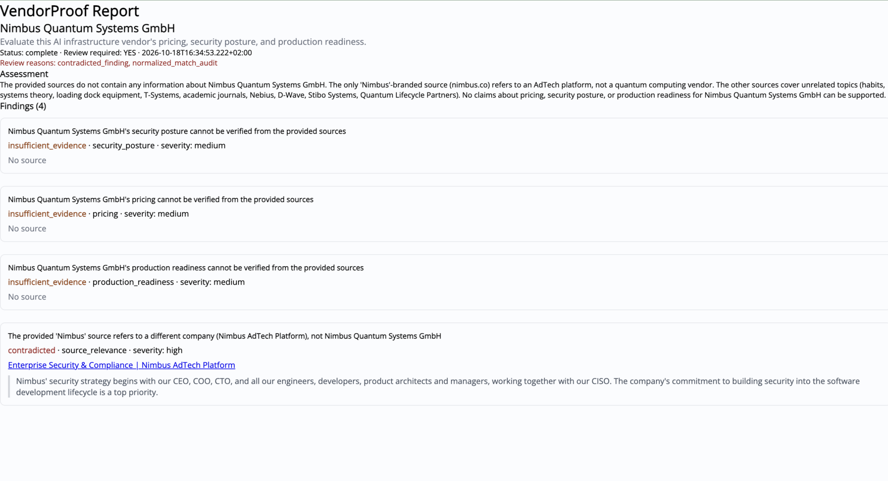
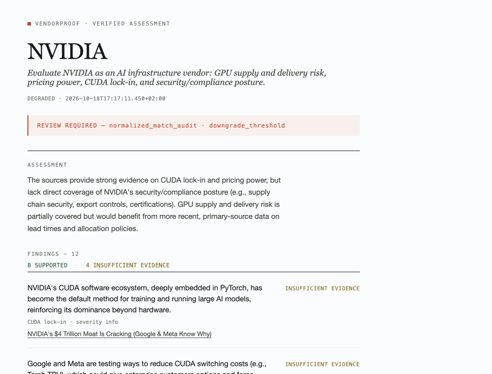
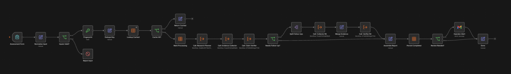
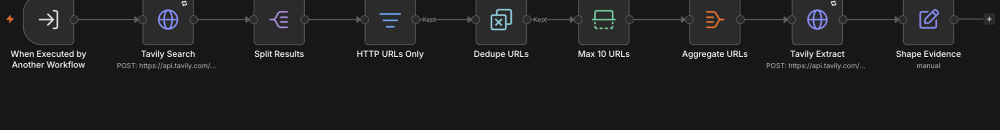

Research once. Verify every claim. Flag what can't be proven.
01 / 07
OPEN — 10s"VendorProof researches a vendor for you — then proves every claim against the actual source before you're allowed to see it." Stop talking. Next slide.
01 — The problem
AI research tools invent citations.
The claim
"Vendor X suffered a major data breach in March 2024."
The cited source
never mentions a breach. It's a pricing page.
A URL next to a claim is not evidence.
Procurement decisions need receipts, not vibes.
02 / 07
OBJECTION PREP — "isn't this just RAG?" RAG retrieves text and trusts the model's summary of it. We verify the claim's quote literally exists inside the cited source — deterministic, not probabilistic. If judges push: "the hard part isn't the string match — it's forcing the LLM to emit verifiable claims in the first place."
02 — How it works
The model proposes. Deterministic code disposes.
Stage
What happens
Trust
PLANNER
MiniMax-M3 decomposes the objective into its own queries
probabilistic
COLLECTOR
Tavily Search → dedupe → Extract full source text
deterministic
VERIFIER
Every claim must quote its source verbatim — or it's downgraded
never upgrades
Claims can only move down the ladder — supported → insufficient_evidence → contradicted. insufficient_evidence is a valid answer.
03 / 07
KEY LINE "The LLM proposes; deterministic code disposes." This is the moat sentence — slow down on it. The verifier can strip a claim's citation, downgrade it, or flag review. It can never upgrade.
03 — The test nobody else ran
We gave it a vendor that doesn't exist.
Every other tool would have confidently written the report anyway. Ours refused.
Actual report — rendered by the live system

04 / 08
THE 10-SECOND PEAK This is the whole pitch in one slide. Fake vendor → zero fabrication → honest failure report + review flag. If wifi allows, show it live: submit a nonsense company, watch every claim come back insufficient_evidence. Pause after "Ours refused."
04 — Then we ran the sponsor
Same standard for NVIDIA.
8 claims verified verbatim. 4 honestly downgraded — including one sourced to a YouTube video the extractor couldn't read. The validator caught it, not us.
Live report · 2 research rounds · operator alerted

05 / 08
THE AUDACIOUS SLIDE "We pointed it at NVIDIA." Judges are NVIDIA/Nebius — this is instantly legible. The killer detail: a claim citing a YouTube video the extractor couldn't parse got auto-downgraded to insufficient_evidence. That's the validator working, not a canned demo. 8/12 supported = honest mix, not a greenwashed report.
05 — Under the hood
One orchestrator. Three sub-workflows. This is the real canvas.
Orchestrator — live canvas

Sub-workflow: evidence collector — zero code nodes

Three published sub-workflows called via Execute Workflow — Planner, Collector, Verifier. Split Out, Filter, Remove Duplicates, Limit, Aggregate carry the fan-out; code exists only where logic is the product.
06 / 08
FOR n8n JUDGES This is composition, not scripting. If asked "why not just a Python script?" — the orchestration, retries, error workflow, dedupe store, and alerts are all declarative n8n. The whole system is inspectable on canvas.
06 — Built on the stack, not beside it
Partner
Load-bearing role
Remove it and
NEBIUS
MiniMax-M3 plans research + issues verdicts via strict JSON schema
no reasoning exists
TAVILY
Search discovers sources; Extract provides the text claims are verified against
no evidence exists
n8n
Orchestrator, sub-workflows, data tables, error handling, Gmail alerts
no system exists
Live now: /form/vp-assessment → instant ack · /form/vp-lookup → rendered report · 8 vendors assessed · dedupe replay = 0 API calls · follow-up loop fired organically on a real run
07 / 08
SCORING Judging criteria: creativity + technical complexity + bonus for partner tech. Every partner is load-bearing — this table answers "did they actually use the stack" in 15 seconds. The last line lists only real, verified numbers.
VendorProof
Judge it like a jury. Click three citations yourself.
github.com/umutyesildal/vendorproof
08 / 08
CLOSE — last 20s The repo has the workflow exports, the validator test suite (10/10), and a real report. Invite them to audit the audit. Then stop — silence is confidence.